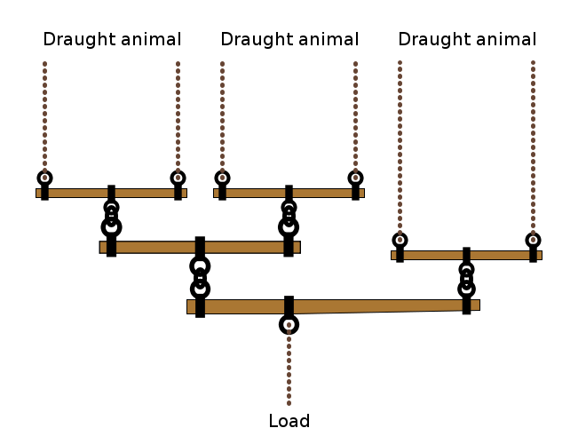

We are ready to start studying the processes known as martingales, which generalize the "balancing" property exhibited by the fraction of white balls in the Poly\'a urn experiment.
Let $(\Omega, \mathcal{F}, \mathrm{P})$ be a probability space, equipped with an increasing family
of sub-$\sigma$-algebras of $\mathcal{F}$. We refer to such a family $(\mathcal{G}_n)_{n=1}^\infty$ as a $\textbf{filtration}$. The $n$th $\sigma$-algebra $\mathcal{G}_n$ represents the state of knowledge (of an experimenter) about the probabilistic world $(\Omega, \mathcal{F}, \mathrm{P})$ at time $n$. A sequence of random variables $(X_n)_{n=1}^\infty$ is said to be adapted to the filtration $(\mathcal{G}_n)_{n=1}^\infty$ if $X_n$ is $\mathcal{G}_n$-measurable for any $n$; that is, if the $n$th value in the sequence is known at time $n$.
Given a filtration $(\mathcal{G}_n)_{n=1}^\infty$, a sequence $(X_n)_{n=1}^\infty$ of random variables is called a martingale with respect to the filtration if it satisfies:
$\mathbf{E}|X_n|<\infty$ for all $n\ge1$.
The sequence $(X_n)_{n=1}^\infty$ is adapted to the filtration $(\mathcal{G}_n)_{n=1}^\infty$.
$\mathbf{E}\left(X_{n+1}\,|\,\mathcal{G}_n\right) = X_n$ for all $n\ge 1$.
If instead of property M3.\ the sequence satisfies the condition $\mathbf{E}\left(X_{n+1}\,|\,\mathcal{G}_n\right) \ge X_n$, it is called a submartingale. If it satisfies $\mathbf{E}\left(X_{n+1}\,|\,\mathcal{G}_n\right) \le X_n$, it is called a supermartingale
(Simple random walk). Let $X_1, X_2, \ldots,$ be a sequence of i.i.d. random variables with $\mathrm{P}(X_n=1)=\tfrac12$, $\mathrm{P}(X_n=-1)=\tfrac12$. Denote $S_n = \sum_{k=1}^n X_n$. Define the filtration $(\mathcal{G}_n)_n$ by $\mathcal{G}_n = \sigma(X_1,\ldots,X_n)$ (the $\sigma$-algebra generated by the first $n$ random signs). Then the sequence $(S_n)_{n=1}^\infty$ (known as "simple symmetric random walk on $\Z$") is a martingale with respect to $(\mathcal{G}_n)_n$, since
(Random walk with balanced steps). More generally, the cumulative sums $S_n=\sum_{k=1}^n S_n$ of an i.i.d.\ sequence $X_1,X_2,\ldots$ where $X_n\sim F$ (the random walk with i.i.d. steps distributed according to $F$) is a martingale with respect to the filtration $\mathcal{G}_n=\sigma(X_1,\ldots,X_n)$ if $\mathbf{E}(X_1)=0$. Even more generally, the r.v.'s $X_1,X_2,\ldots$ can be assumed to be independent but not identically distributed; if for any $n$ we have that $\mathbf{E}|X_n|<\infty$ and $\mathbf{E} X_n = 0$, then (by the same computation as above) $S_n$ is a martingale.
(Revealing information). Let $X$ be a random variable and let $(\mathcal{G}_n)_{n=1}^\infty$ be a filtration. The sequence $(X_n)_{n=1}^\infty$ defined by $X_n = \mathbf{E}\left(X\,|\,\mathcal{G}_n\right)$ is a martingale. Intuitively, it is the sequence of better and better estimates for the value of $X$ that we can make as more and more information (represented by the filtration) is revealed.
It is not difficult to check that if $(X_n)_{n=1}^\infty$ is a martingale with respect to a filtration $(\mathcal{G}_n)_{n=1}^\infty$ then $(X_n)_{n=1}^\infty$ is also a martingale with respect to its "natural" filtration $\mathcal{H}_n=\sigma(X_1,\ldots,X_n) \subset \mathcal{G}_n$. This illustrates the fact that the filtration $(\mathcal{G}_n)$ usually doesn't play a very major role, but is simply a convenient way to represent the information that is used to compute the sequence.
(Discrete harmonic functions on a graph). Let $G=(V,E)$ be a graph (assume $V$ is finite or countable). A function $h:V\to\R$ is called $\textbf{harmonic}$ if it satisfies the "mean value" property
where the notation $y\sim x$ means that $x,y$ are neighbors and $\operatorname{deg}(x)$ is the number of neighbors (the degree of $x$). Let $X_0,X_1,X_2,\ldots$ be a simple random walk on $G$; that is, each $X_n$ is a $V$-valued random variable, and the distribution of $X_{n+1}$ is defined conditionally on $X_n$ by
The starting point $X_0$ of the walk can be a deterministic vertex $x$ or a distribution on $V$. Let $\mathcal{G}_n=\sigma(X_0,\ldots,X_n)$. Define a sequence of real-valued random variables by $M_n = h(X_n)$. As an exercise, we leave to the reader to check that $(M_n)_{n=0}^\infty$ is a martingale with respect to the filtration $(\mathcal{G}_n)_{n=0}^\infty$
("Double or nothing"). Let $X_1,X_2,\ldots$ be an i.i.d.\ sequence of random variables satisfying $\mathrm{P}(X_n = 0) = \tfrac12, \mathrm{P}(X_n = 2) = \tfrac12$. Let $\mathcal{G}_n=\sigma(X_1,\ldots,X_n)$. Define $M_n = \prod_{k=1}^n X_n$. Then
so $(M_n)_{n=1}^\infty$ is a martingale with respect to the filtration $(\mathcal{G}_n)_{n=1}^\infty$. The meaning of the name "double or nothing" should be obvious.
(Multiplicative random walk). The previous example is a special case of the following situation: let $X_1, X_2, \ldots$ be an i.i.d. sequence of nonnegative random variables with $\mathbf{E}(X_1)=1$. Then by the same computation as above, $M_n = \prod_{k=1}^n X_k$ is a martingale with respect to the filtration $\mathcal{G}_n = \sigma(X_1,\ldots,X_n)$.
(Alexander Calder mobile sculptures). The mobile sculptures pioneered by the American sculptor Alexander Calder are a mechanical manifestation of a martingale (Figure 1).
The idea is that the $n$th random variable corresponds to the horizontal displacement of a "node" in the mobile as one descends the tree of nodes starting from the upper support point of the mobile. The fact that the tree is in static equilibrium corresponds to the statement that the center of mass of the subtree supported below each node is at the same horizontal displacement as the node itself, which can be thought of as a version of the martingale equation $\mathbf{E}\left(X_{n+1}\,|\,\mathcal{G}_n\right) = X_n$.
(Whippletrees). Another real-life example of the martingale idea is in the mechanical device known as a $\textbf{whippletree}$, used to divide force evenly between several draught animals towing a load (Figure 2).

If $(X_n)_{n=1}^\infty$ is a martingale w.r.t.\ a filtration $(\mathcal{G}_n)_{n=1}^\infty$, then for $m< n$, $\mathbf{E}\left(X_n\,|\,\mathcal{G}_m\right) = X_m$.
If $(X_n)_{n=1}^\infty$ is a supermartingale w.r.t.\ $(\mathcal{G}_n)_{n=1}^\infty$, then for $m< n$, $\mathbf{E}\left(X_n\,|\,\mathcal{G}_m\right) \le X_m$.
If $(X_n)_{n=1}^\infty$ is a submartingale w.r.t.\ $(\mathcal{G}_n)_{n=1}^\infty$, then for $m< n$, $\mathbf{E}\left(X_n\,|\,\mathcal{G}_m\right) \ge X_m$.
ProofIt is enough to prove claim 2., since 3.\ follows by applying 2. to $-X_n$, and 1.~follows by combining 2.~and~3. Assume $X_n$ is a supermartingale, then $X_m\ge \mathbf{E}\left(X_{m+1}\,|\,\mathcal{G}_m\right)$ by the definition, and by induction on $k$, $X_m\ge \mathbf{E}\left(X_{m+k}\,|\,\mathcal{G}_m\right)$, since if we showed this for $k-1$ then we have that
A$\square$
If $(X_n)_n$ is a martingale w.r.t.\ $(\mathcal{G}_n)_n$ and $\varphi:\R\to\R$ is a convex function such that $\mathbf{E}|\varphi(X_n)|<\infty$ for all $n$, then $(\varphi(X_n))_n$ is a submartingale.
If $(X_n)_n$ is a submartingale w.r.t.\ $(\mathcal{G}_n)_n$ and $\varphi:\R\to\R$ is a weakly increasing convex function such that $\mathbf{E}|\varphi(X_n)|<\infty$ for all $n$, then $(\varphi(X_n))_n$ is a submartingale.
ProofBy Jensen's inequality, $\mathbf{E}\left(\varphi(X_{n+1})\,|\,\mathcal{G}_n\right) \ge \varphi\left(\mathbf{E}\left(X_{n+1}\,|\,\mathcal{G}_n\right)\right)$, and this is $= \varphi(X_n)$ in the case of the first claim, or $\ge \varphi(X_n)$ in the case of the second.A$\square$
Let $p\ge 1$. If $(X_n)_n$ is a martingale w.r.t.\ $(\mathcal{G}_n)_n$ and $\mathbf{E}|X_n|^p<\infty$ for all $n$, then $|X_n|^p$ is a submartingale w.r.t.\ $(\mathcal{G}_n)_n$.
If $(X_n)_{n=1}^\infty$ is a submartingale then $\big((X_n-a)_+\big)_{n=1}^\infty$ is a submartingale (where for a real number $x$, $x_+ = \max(x,0)$ is the positive part of $x$).
If $(X_n)_{n=1}^\infty$ is a supermartingale then for any $a\in\R$, $(X_n\wedge a)_{n=1}^\infty$ is a supermartingale.